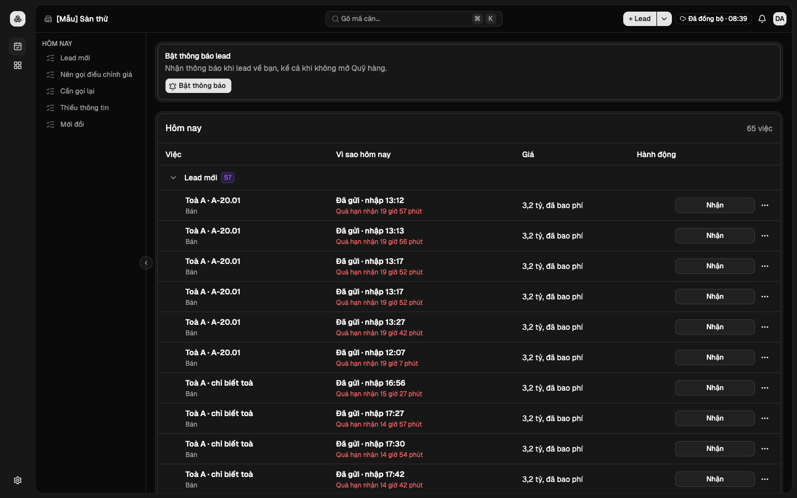
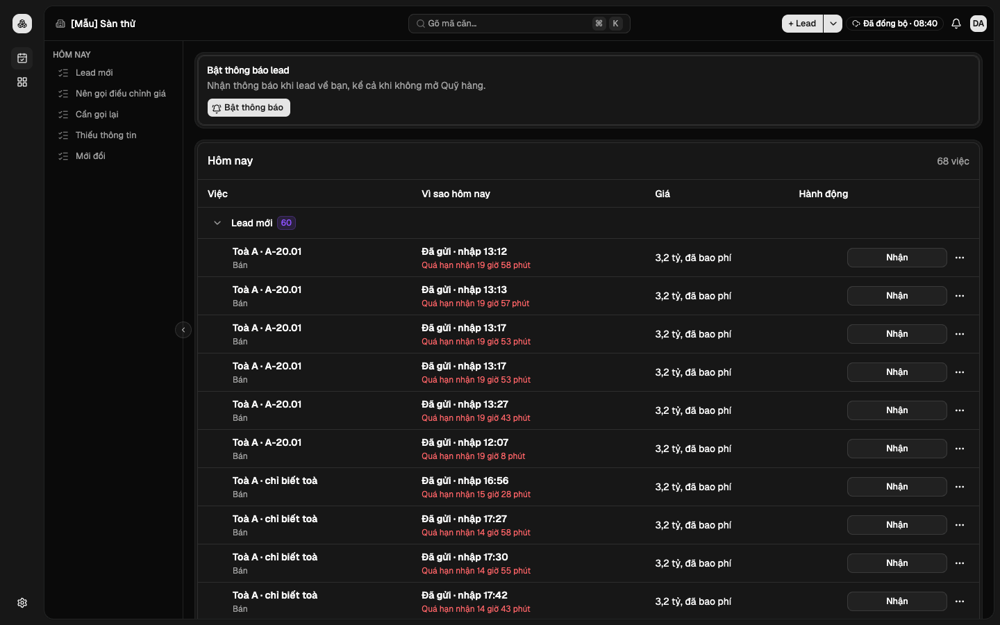
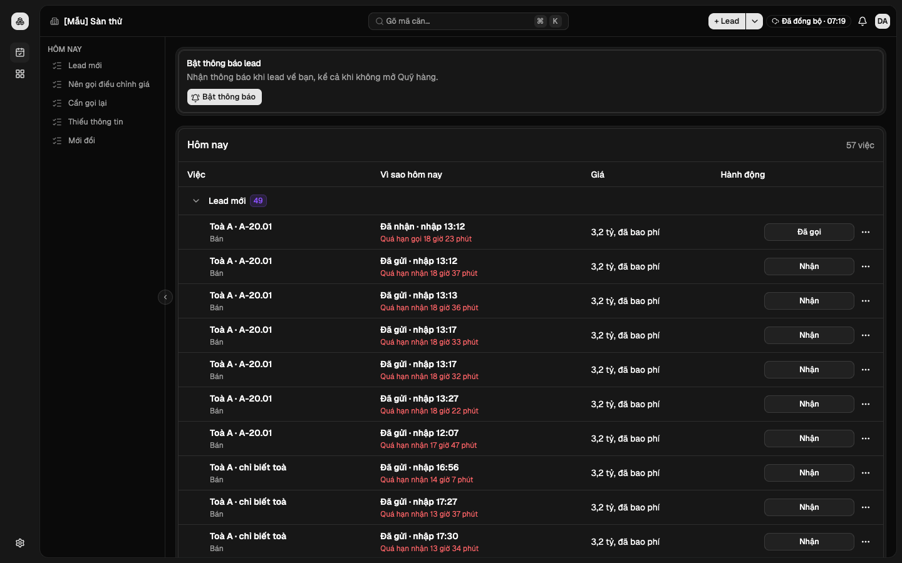
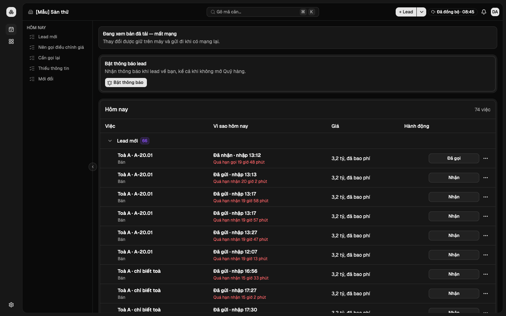
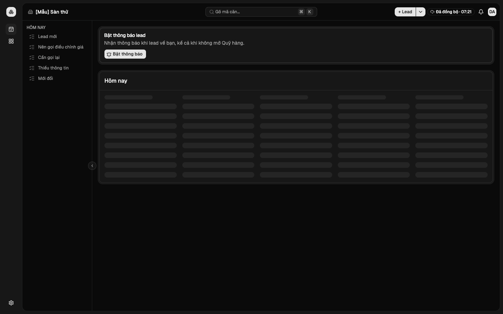
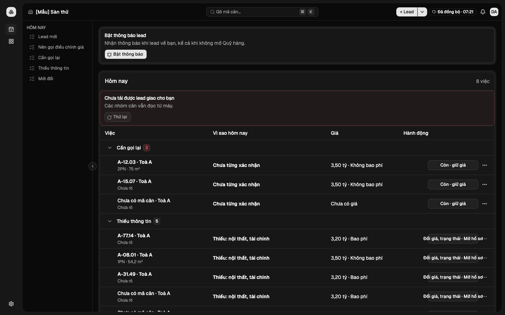
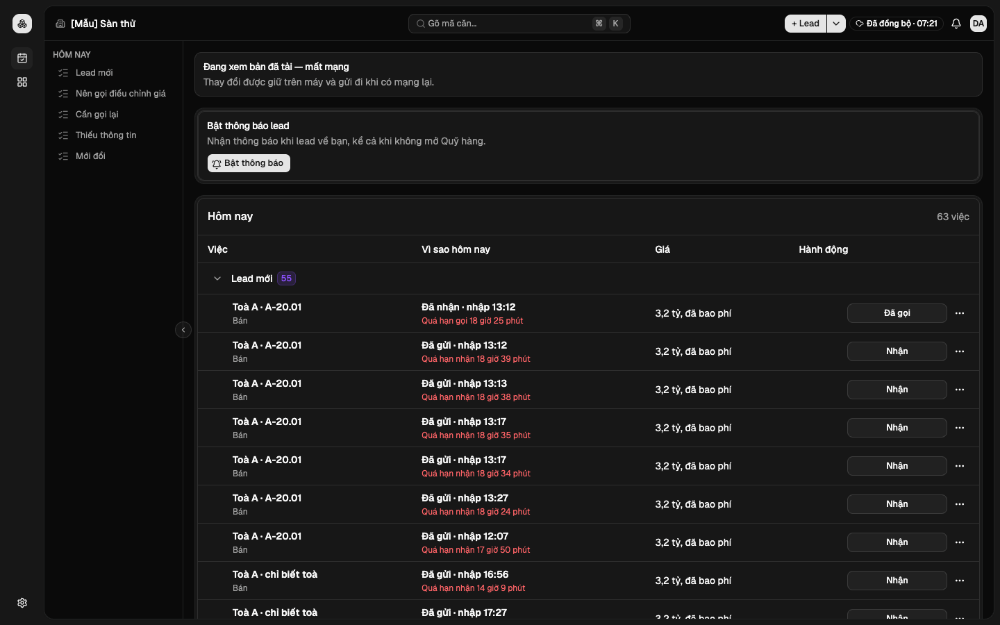
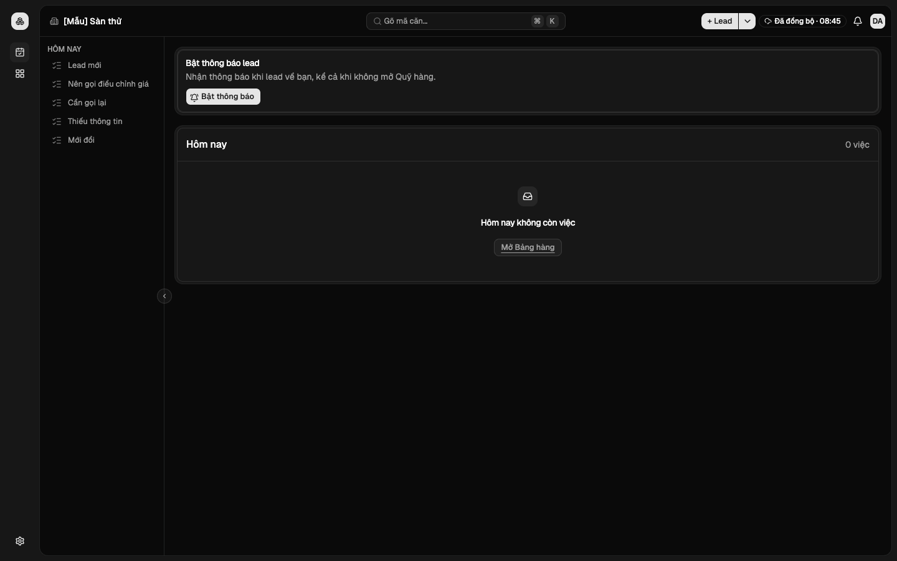
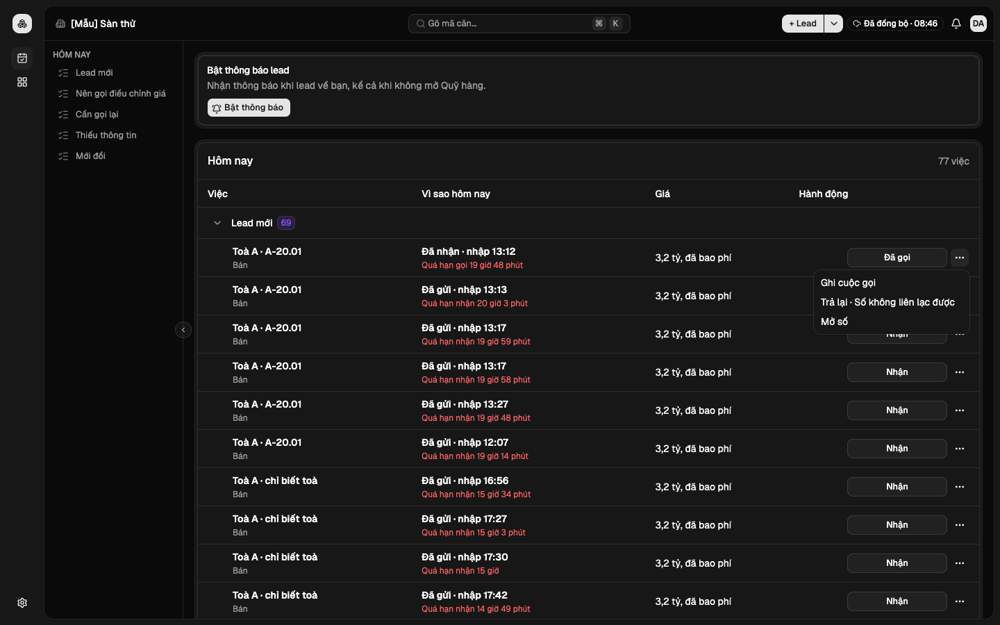
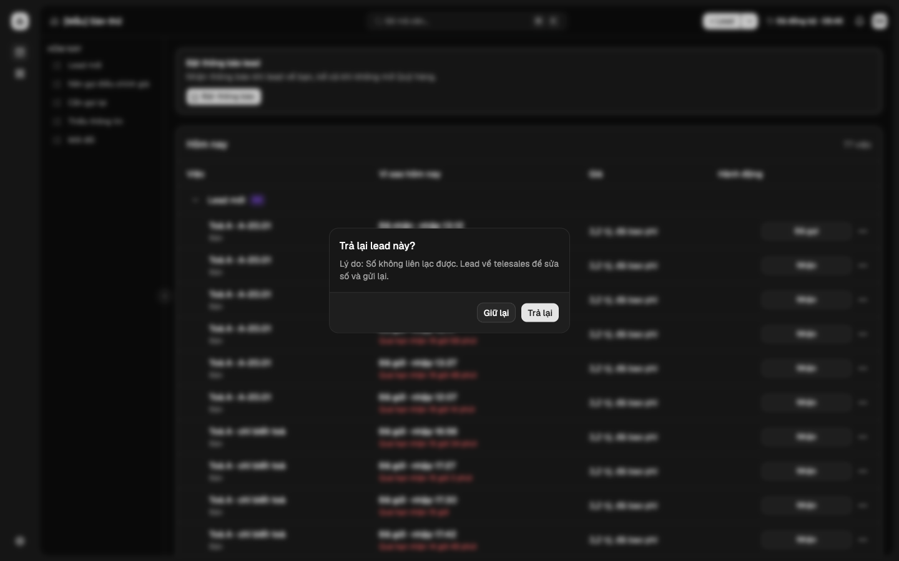

"Đầu chủ mở Hôm nay và đọc mỗi việc trên một dòng: tên căn, cột «Vì sao hôm nay» hai tầng — lý do chữ đậm, hạn đỏ khi quá, vàng khi còn dưới 15 phút — và giá; làm việc đầu của nhóm bằng đúng một nút, một chạm; việc còn lại nằm trong ⋯; hàng đợi, luật mỗi căn một hàng đợi và ghi kết quả của hàng 22 giữ nguyên"
Vì sao làm
Quyết định 14A của chủ kho 02/11 (PR #88, vo-va-ia §2): bản hàng 22 rối nút và lý do khó đọc; khối đích đổi từ data-grid-grouping-1 sang solution-agents-2 cộng ô hạn của data-grid-base-5. Hàng 39 dựng bản điện thoại trên khuôn mới nên đứng sau
Đã hứa
- AC-1 — — Mỗi việc một dòng, «Vì sao hôm nay» hai tầng.
- AC-2 — — Màu hạn theo mốc.
- AC-3 — — Đúng một nút, việc còn lại trong ⋯.
- AC-4 — — Một chạm.
- AC-5 — — Nhóm thu gọn được, giữ luật hàng đợi.
- AC-6 — — Trạng thái giữ như hàng 22, mất mạng không kẹt.
- AC-7 — — Khuôn và dọn.
- AC-9 — — Việc trong ⋯ vẫn làm được.
- AC-8 — — Luật hàng 22 giữ nguyên.
Thiết kế
docs/superpowers/specs/2026-11-04-lam-lai-hom-nay-dau-chu-design.md
Quyết định
- 2026-11-04 · Máy · approach · S1 — Đã tra tri thức: Đầu chủ mở Hôm nay và đọc mỗi việc trên một dòng: tên căn, cột «Vì sao hôm nay» hai tầng — lý do chữ đậm, hạn đỏ khi quá, vàng khi còn dưới 15 phút — và giá; làm việc đầu của nhóm bằng đúng một nút, một chạm; việc còn lại nằm trong ⋯; hàng đợi, luật mỗi căn một hàng đợi và ghi kết quả của hàng 22 giữ nguyênKho đã khai tri_thuc — bước thiết kế tra trang trước khi chọn.
- 2026-11-04 · Máy · approach · S1 — Khung solution-agents-2, ô hạn của data-grid-base-5, một nút cố định mỗi dòng, việc còn lại vào ⋯.Quyết định 14A của chủ kho 02/11 ghi ở vo-va-ia.
- 2026-11-04 · Máy · descope · S1 — bỏ design-pass — chủ kho đã chọn lối A trên trang so sánh 02/11 (quyết định 14A); khối, cột và luật một nút đã chốtvo-va-ia ghi chủ kho chọn A sau khi chỉ ra nút rối và lý do khó đọc; hàng chỉ dựng đúng lối đã chọn, ảnh 1440 do lượt chấm chụp ở E1, E4, E5.
- 2026-11-04 · Máy · descope · S1 — bỏ coverage-scan — trục lấy từ bảng Trạng thái × khổ và bốn cột của thiết kế, mỗi ô có AC; đổi lại không có bằng chứng độ phủMàn đã có, đổi trình bày; không gian là cột × mốc hạn × loại việc × nhóm × trạng thái đã liệt ở Coverage.
- 2026-11-04 · Máy · descope · S1 — bỏ đặc-tả-UX đầy đủ — điền bản ngắn (người, khuôn, thẻ việc, trạng thái) vì màn và khuôn đã có từ hàng 22Khuôn hom-nay-dau-chu đã khai bố cục Tràn và năm trạng thái.
- 2026-11-04 · Máy · approach · S1 — Bảng nút: lead đã gửi «Nhận», lead đã nhận «Đã gọi», căn «Còn · giữ giá» — nút viền cùng bề rộng; Trả lại (có hỏi lại), Đổi giá, trạng thái, Mở hồ sơ, Gọi, Gắn mã, Mở số vào ⋯.Ngưỡng SỐNG của ô cơ hội đã ký (Cổng Đáng 02/11) nêu đúng nhãn nút chính và các việc trong ⋯ (phản biện P0).
- 2026-11-04 · Người · seal · gate1 —
- 2026-11-04 · Máy · fix · S3 — Đưa hồ sơ về Cổng Phạm vi chờ người duyệt thay vì làn máy.Kiểm chuẩn giao diện (packages/ui-lint/kiem-chuan.mjs dòng 182) đòi ô «Duyệt» của khối mới trong catalog khớp approved_by của hồ sơ; làn máy để approved_by rỗng nên khối solution-agents-2 không vào catalog được.
- 2026-11-04 · Người · seal · gate1 —
- 2026-11-05 · Người · seal · gate1 —
- 2026-11-05 · Người (Manh Phan) · revisit · gate1 — AC-3 ghi rõ nút chính là việc đầu của nhóm theo hàng 22: căn nhóm có xác nhận chủ nhà «Còn · giữ giá», căn nhóm Thiếu thông tin (chỉ có Mở hồ sơ) «Đổi giá, trạng thái · Mở hồ sơ»; không nhóm nào nhận thêm việc.người chọn sau S4 vòng 2: Sửa câu chữ hợp đồng
- 2026-11-05 · Máy · fix · S4-r1 — Bật lại hàng tiêu đề của bảng Hôm nay đầu chủ để bốn cột Việc · Vì sao hôm nay · Giá · Hành động hiện đúng tên; ghim lại bản đồ khuôn sau khi gộp main.E1 trượt vì bảng dựng với renderHeader={false} từ hàng 22 nên AC-1 «bốn cột Việc · Vì sao hôm nay · Giá · Hành động» không thấy được; E7a trượt vì khuon-nap.json ghim bản đồ trước khi gộp main (ngoại lệ trỏ trang proto đã gỡ).
- 2026-11-05 · Máy · fix · S4-r1 — Nhóm căn «Thiếu thông tin» giữ nút chính «Đổi giá, trạng thái · Mở hồ sơ» vì đó là việc đầu (và duy nhất) của nhóm ở hàng 22; «Còn · giữ giá» là nút chính của các nhóm căn có việc ấy.AC-3 đặt nhãn là «việc đầu của nhóm» và cấm thêm hay mất việc của hàng 22; nhóm missing_info trong packages/core/src/today/mac-dinh.ts chỉ có open_record, nên gắn «Còn · giữ giá» cho nó là thêm một việc hàng 22 không có. Chỗ thử E1 nay in nhóm của từng dòng để người chấm đối chiếu.
- 2026-11-05 · Máy · revisit · gate2 — Ngoài-1: ghi Known limitsmáy tự định tuyến theo đề xuất S4 «known-limits» — kho bật feature_loop.ngoai_n_tu_dinh_tuyen
- 2026-11-05 · Máy · revisit · gate2 — Ngoài-2: ghi Known limitsmáy tự định tuyến theo đề xuất S4 «known-limits» — kho bật feature_loop.ngoai_n_tu_dinh_tuyen
- 2026-11-05 · Máy · revisit · gate2 — Ngoài-3: ghi Known limitsmáy tự định tuyến theo đề xuất S4 «known-limits» — kho bật feature_loop.ngoai_n_tu_dinh_tuyen
- 2026-11-05 · Máy · revisit · gate2 — Ngoài-4: ghi Known limitsmáy tự định tuyến theo đề xuất S4 «known-limits» — kho bật feature_loop.ngoai_n_tu_dinh_tuyen
- 2026-11-05 · Máy · revisit · gate2 — Ngoài-5: ghi Known limitsmáy tự định tuyến theo đề xuất S4 «known-limits» — kho bật feature_loop.ngoai_n_tu_dinh_tuyen
- 2026-11-05 · Máy · revisit · gate2 — Ngoài-6: ghi Known limitsmáy tự định tuyến theo đề xuất S4 «known-limits» — kho bật feature_loop.ngoai_n_tu_dinh_tuyen
- 2026-11-05 · Máy · revisit · gate2 — Ngoài-7: chấp nhận, không sửamáy tự định tuyến theo đề xuất S4 «wont-fix» — kho bật feature_loop.ngoai_n_tu_dinh_tuyen
- 2026-11-05 · Máy · revisit · gate2 — Ngoài-9: ghi Known limitsmáy tự định tuyến theo đề xuất S4 «known-limits» — kho bật feature_loop.ngoai_n_tu_dinh_tuyen
- 2026-11-05 · Máy · revisit · gate2 — Ngoài-10: ghi Known limitsmáy tự định tuyến theo đề xuất S4 «known-limits» — kho bật feature_loop.ngoai_n_tu_dinh_tuyen
- 2026-11-05 · Máy · revisit · gate2 — Ngoài-11: ghi Known limitsmáy tự định tuyến theo đề xuất S4 «known-limits» — kho bật feature_loop.ngoai_n_tu_dinh_tuyen
- 2026-11-05 · Máy · revisit · gate2 — Ngoài-12: ghi Known limitsmáy tự định tuyến theo đề xuất S4 «known-limits» — kho bật feature_loop.ngoai_n_tu_dinh_tuyen
Bằng chứng
Các eval
| Eval | Tiêu chí | Loại | Verdict | run_id | verified_at |
|---|---|---|---|---|---|
| E1 | AC-1 | ui-check | PASS | minted-lam-lai-hom-nay-dau-chu-E1-r3 | 2026-11-05T01:38:59Z |
| E2 | AC-2 | test | PASS | minted-lam-lai-hom-nay-dau-chu-E2-r2 | 2026-11-05T00:17:48Z |
| E3 | AC-3 | test | PASS | minted-lam-lai-hom-nay-dau-chu-E3-r3 | 2026-11-05T01:38:59Z |
| E4 | AC-4 | ui-check | PASS | minted-lam-lai-hom-nay-dau-chu-E4-r3 | 2026-11-05T01:38:59Z |
| E5 | AC-5 | ui-check | PASS | minted-lam-lai-hom-nay-dau-chu-E5-r3 | 2026-11-05T01:38:59Z |
| E6 | AC-6 | ui-check | PASS | minted-lam-lai-hom-nay-dau-chu-E6-r3 | 2026-11-05T01:38:59Z |
| E7a | AC-7 | script | PASS | minted-lam-lai-hom-nay-dau-chu-E7a-r2 | 2026-11-05T00:17:48Z |
| E7b | AC-7 | test | PASS | minted-lam-lai-hom-nay-dau-chu-E7b-r1 | 2026-11-05T00:00:37Z |
| E8 | AC-8 | test | PASS | minted-lam-lai-hom-nay-dau-chu-E8-r2 | 2026-11-05T00:17:48Z |
| E9 | AC-9 | ui-check | PASS | minted-lam-lai-hom-nay-dau-chu-E9-r3 | 2026-11-05T01:38:59Z |
Chi tiết từng eval
PASS E1 · ui-check
AC-1: — Mỗi việc một dòng, «Vì sao hôm nay» hai tầng.

PASS E2 · test
AC-2: — Màu hạn theo mốc.
PASS E3 · test
AC-3: — Đúng một nút, việc còn lại trong ⋯.
ℹ duration_ms 1938.094166 __EXIT=0
PASS E4 · ui-check
AC-4: — Một chạm.




PASS E5 · ui-check
AC-5: — Nhóm thu gọn được, giữ luật hàng đợi.
PASS E6 · ui-check
AC-6: — Trạng thái giữ như hàng 22, mất mạng không kẹt.








PASS E7a · script
AC-7: — Khuôn và dọn.
PASS E7b · test
AC-7: — Khuôn và dọn.
PASS E8 · test
AC-8: — Luật hàng 22 giữ nguyên.
PASS E9 · ui-check
AC-9: — Việc trong ⋯ vẫn làm được.




Eval không phân biệt (Analyst)
Vòng verify
- Round 1: E1, E7a failed — màn Hôm nay thiếu hàng tên bốn cột; khuôn lệch. Returned to implementation.
- Round 2: E1 failed — nhãn nút chính của nhóm Thiếu thông tin chưa ghi rõ (AC-3 sửa lại, hợp đồng duyệt lại ở Cổng Phạm vi). Returned to implementation.
- Round 3: all evals passed — E1, E3, E4, E5, E6, E9 chạy lại; E2, E7a, E7b, E8 carry-forward.
Tài nguyên
| Khối | Tác tử | Token đầu ra |
|---|---|---|
| S4 round 1 | 21 | 67.163 |
| S4 round 2 | 19 | 42.560 |
| S4 round 3 | 20 | 46.636 |
3 lượt chấm · tổng 156.359 token
Giới hạn và ngoài hợp đồng
- Bản điện thoại của Hôm nay đầu chủ (hàng 39).
- Đổi bộ nhóm, luật mỗi căn một hàng đợi, lời gọi ghi kết quả hay API của hàng 22.
- Ô tìm, lọc «cần chú ý», nút mật độ của khối `solution-agents-2`.
Giao
chưa ghi quan sát production
Giá trị
- Câu hỏi phép đo trả lời: [đề xuất] đã đạt «Mỗi dòng đúng một nút viền cùng bề rộng, nhãn là việc đầu của nhóm (Nhận · Đã gọi · Còn · giữ giá); Trả lại có hỏi lại, Đổi giá, trạng thái, Mở hồ sơ nằm trong ⋯; cột Lý do và Hạn gộp thành một ô hai tầng; mười tiêu chí đã ký của hàng 22 vẫn đạt; khuôn KhungHomNay và bảng «Khối đã chuyển thể» của danh mục ghi khối mới» chưa? — chưa đo
- Kết quả nào là SỐNG: [đề xuất] Mỗi dòng đúng một nút viền cùng bề rộng, nhãn là việc đầu của nhóm (Nhận · Đã gọi · Còn · giữ giá); Trả lại có hỏi lại, Đổi giá, trạng thái, Mở hồ sơ nằm trong ⋯; cột Lý do và Hạn gộp thành một ô hai tầng; mười tiêu chí đã ký của hàng 22 vẫn đạt; khuôn KhungHomNay và bảng «Khối đã chuyển thể» của danh mục ghi khối mới — chưa đo
- Kết quả nào là CHẾT: [đề xuất] chưa đạt «Mỗi dòng đúng một nút viền cùng bề rộng, nhãn là việc đầu của nhóm (Nhận · Đã gọi · Còn · giữ giá); Trả lại có hỏi lại, Đổi giá, trạng thái, Mở hồ sơ nằm trong ⋯; cột Lý do và Hạn gộp thành một ô hai tầng; mười tiêu chí đã ký của hàng 22 vẫn đạt; khuôn KhungHomNay và bảng «Khối đã chuyển thể» của danh mục ghi khối mới» khi hết timebox — chưa đo
- Timebox: … — chưa đo